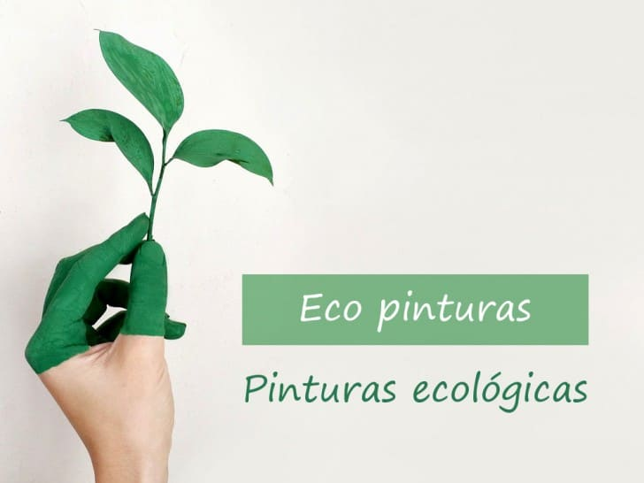
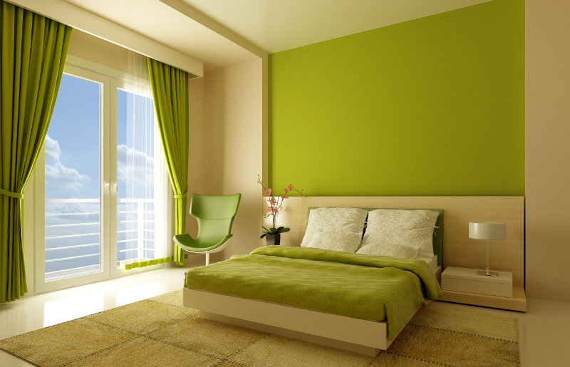

Pintura ecologica
- 
-

El primer cambio lo hacemos nosotros
-
.jpg)
Cuidemos nuestro mundo para un mejor futuro
>
¿Tes interesa saber mas?
¿Que es la pintura ecologica?
Las pinturas son las que están compuestas con materias primas de origen vegetal y/o mineral. Al carecer de sustancias dañinas, como biocidas o plastificantes, su impacto en el medio ambiente es muy inferior al de las pinturas sintéticas, cuya composición se basa en derivados del petróleo.
¿Porque elegir pinturas ecologicas?
Porque más allá de dar color a la pared, la pintura debe ser como una piel sana sobre los materiales que cubre. Pintar la casa con una pintura ecológica es el primer paso para lograr una casa más saludable.
Las pinturas ecológicas crean una capa porosa que deja que las paredes transpiren, de manera que el vapor de agua y la humedad son evacuados al exterior y se evita la formación de condensaciones que a la larga pueden derivar en desconchados en la pared. Así, se evita también la aparición de hongos y bacterias, garantizando unas paredes más higiénicas y que la pintura dure más en buen estado.
¿Como saber si una pintura es ecologica?
Cualquier pintura ecológica debe contar con la etiqueta ecológica europea o Ecolabel-Cradle, la cual garantiza que contienen menos tóxicos y petroquímicos. Pero las pinturas más naturales prescinden de ellos.